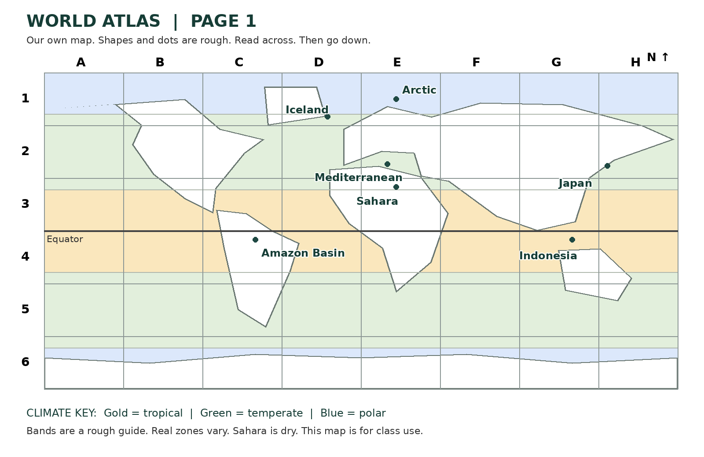

Friday 26 February 2027 | P2 | 40 minutes | Year A
Humanities · GROW · Spring 2 Week 1 · HUM-GROW-S2-W01
An atlas is a book of maps. An index helps you find a place. Read the letter across, then the number down.

| Place | Box | Clue |
|---|---|---|
| Amazon Basin | C4 | Tropical |
| Mediterranean | E2 | Temperate |
| Arctic | E1 | Polar |
| Japan | H2 | Earthquake |
| Indonesia | G4 | Volcano |
| Sahara | E3 | Dry |
| Iceland | D1 | Earthquake and volcano |
Tropical: hot through the year. Temperate: between tropical and polar. Polar: very cold for much of the year. Dry: very little rain.
Circle means earthquake hazard. Triangle means volcano hazard. A hot climate does not cause an earthquake. Climate describes usual weather over many years. Plate movement causes earthquakes.
Broad belts are a guide. Real climate zones vary. Marks do not predict the next event.
Where this leads: map makers and journey planners use a grid and key.